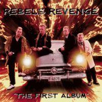

Rebels Revenge - The First Album (Album, 2005)
01 - Egghead (2:32)
02 - Ripper Jack (1:46)
03 - Pretty Little Girl (1:55)
04 - Rebels Revenge (3:04)
05 - Dream Girl (2:27)
06 - Caddy'58 (2:44)
07 - Marianne (3:05)
08 - Red Hot Rock'n'Roll (2:02)
09 - Oldsmobile Rocket '88 (1:49)
10 - Ring Of Fire (2:57)
11 - Fly On The Wall (2:26)
12 - Footloose (3:03)
13 - Party Last Night (2:16)
14 - Naked In The Rain (2:31)
15 - Lena (2:23)
© Old Rock Records :: [ORR 2005-4]
Notes
Review
134/366 (Project 366)
Wonderful album... yes, literally! "The First Album" is full of wonders! Strong conformity of performance and tune, vocals and instruments. Also a very special and certain sound throughout the album, but there is an almost constant change of mood. From very melting things to a completely rocket powered mood. There even kind of surfadelic tone exists! Lovely, great Teddyboy Rock 'n' Roll and Rockabilly band indeed.
The first track is a bit twistin' Rock'n'Roll theme, "Egghead" with a characteristic mood of the sound of Rebels Revenge. However, which is better felt in the second song "Ripper Jack". Teddy Boy nift and Rebel rockin' music. Another side of the band are mood of the third track "Pretty Little Girl", rockin' and rollin' wavy song with tender insert; and fourth track "Rebels Revenge" with oh... uh... smoky rhythm and walking guitars, really catchy motion and chopper power. Such a dashing start to the album gives way to a very sweet composition "Dreamgirl". So honey, so nice. From dreamy awakening to a real melting thaw. But already the next (sixth) song returns full drive. "Caddy' 58" with a real carrying away tune. Amazing solos, shocking wild energy and just awesome. The next song "Marianne" with a cruisin' melody. Old fashioned Tedy Boy gentle theme about a girl. Whereas the eighth song is completely "Red Hot Rock'n'Roll" with wild craze of Teds. The ninth song "Oldsmobile Rocket' 88" is a surefire hit for me. Saturation with the best of their approaches and even fancy teddy surfadelic mood. Sounds so pretty. After such a warm-up, the next track "Ring Of Fire" just sounds astonishingly. Great cover version with a twist. Very beautiful chic, if original song is known - you like that cover. If not yet - you would like it. With the eleventh song "Fly On The Wall", good twistin'n'cruisin is returned. It reminds a kind music ditty. Further track "Footloose" with an interesting start and amazing then till shocking outcome, tune with subsequent quirks and repeats back. Song even is power pop a bit. Sounds good. "Party Last Night" with the continuation of the previous mood. But with more foggy accents and misty inserts. And still gentle. The fourteenth song "Naked In The Rain" is a good afterwards track. Affably enough. And the last track is "Lena", wild rocking song. Dreamy, but mighty.
Despite the fact that this is the first album from Rebels Revenge - it was done by top-notch musicians with considerable experience. There are both their own self-penned songs and cover versions of famous songs. A very interesting band playing very stiff thoughtful rebel rock. About tenderness, about fun and revels, about gravity and higher.